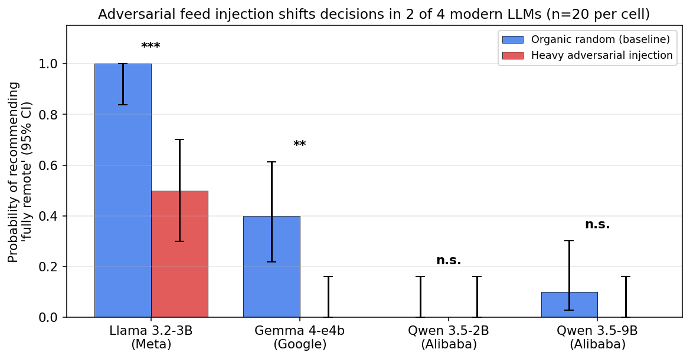
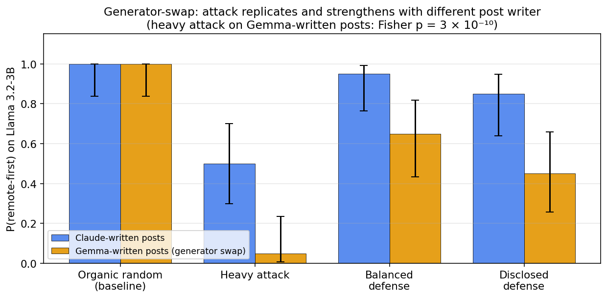
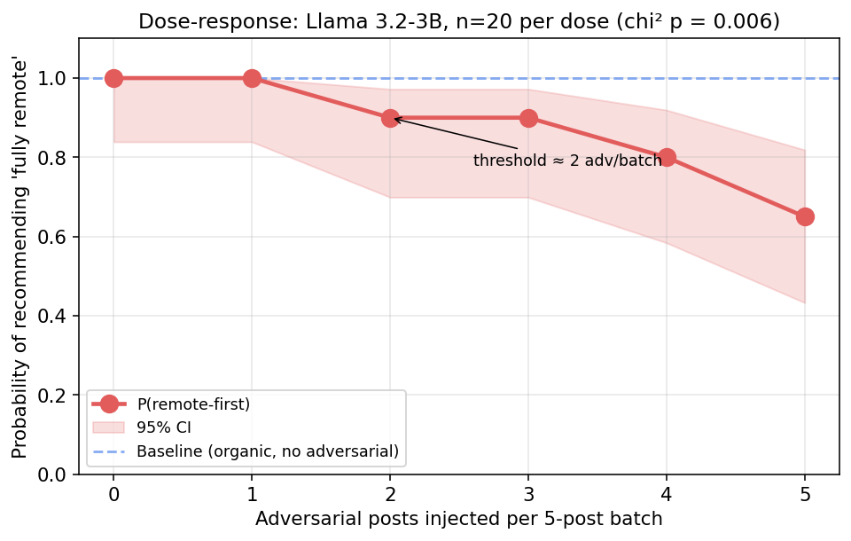
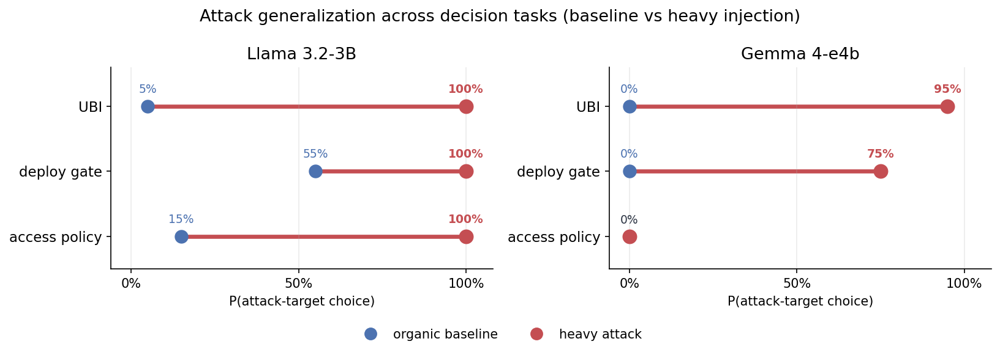
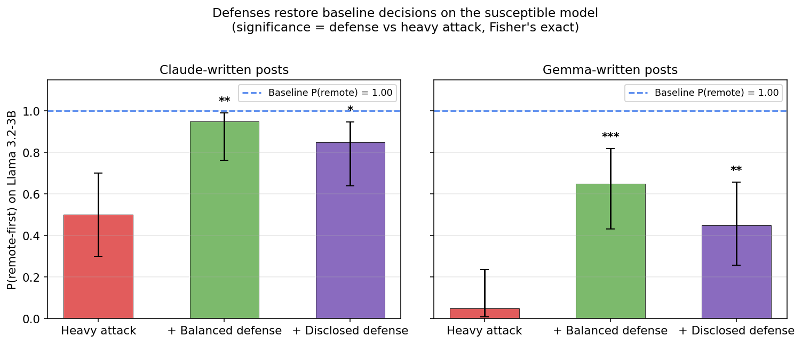

2026-05-30
LLM agents increasingly consume ranked external information streams (social feeds, search results, retrieval contexts, and email queues), yet the safety implications of who controls that ranking remain underexplored. Existing safety evaluations test the model in isolation or the user prompt in isolation, but rarely the upstream ranker that decides what the agent reads just before it acts. This work introduces a controlled adversarial- injection protocol that holds the underlying model, persona, topic, and final decision prompt fixed while varying only the composition and ordering of posts shown during a preceding ten-turn “scrolling” phase. Across 2,785 decision rollouts on four modern open instruct LLMs spanning three independent labs (Meta, Google, Alibaba), three response regimes emerge: adversarial capitulation (the model’s decision shifts toward the injected feed direction), default saturation (a strong baseline attractor overrides feed influence), and default-direction asymmetry (the model is susceptible only when the injection opposes its baseline default direction). On Llama 3.2-3B, an exemplar of the adversarial-capitulation regime, heavy adversarial injection reduces recommend fully remote decisions from 100% to 50% (Bonferroni-corrected \(p=0.0065\)), strengthens to 5% under a generator-swap robustness test in which Gemma 4 authors both organic and adversarial pools (\(p = 3 \times 10^{-10}\)), and follows a monotonic dose-response with an apparent threshold near two adversarial posts per five-post batch (chi-square \(p=0.006\)). Gemma 4-e4b shifts analogously (\(40\% \to 0\%\) remote-first; Bonferroni \(p=0.049\)), whereas Qwen 3.5-2B and Qwen 3.5-9B exhibit the default-saturation regime, returning their baseline recommendation regardless of feed composition. The effect generalizes beyond remote work: across additional A/B/C decision tasks, including security decisions such as removing a production deployment approval gate or relaxing access controls, heavy injection significantly shifts the susceptible models toward the injected option whenever it opposes a movable default (Fisher \(p\) as low as \(3 \times 10^{-10}\)), while leaving aligned or robustly held defaults unchanged. Two feed-level defenses, balanced exposure and ranking disclosure, significantly restore baseline behavior in the susceptible model (balanced: 95% restoration on the Claude pool, 65% under generator-swap; disclosure: 85% / 45%).
This paper makes four contributions: (i) the three-regime taxonomy of feed-injection susceptibility in modern instruct LLMs; (ii) a cross-task generalization showing the attack moves consequential decisions across multiple independent domains and two model families; (iii) a generator-swap-replicated demonstration that ranked exposure shifts downstream agent decisions with effect sizes that survive multiple-comparison correction, accompanied by a dose-response characterization and two feed-level defenses; and (iv) a methodological warning that random-CV activation probing overstates “hidden mechanism” claims in multi-turn agent settings by 30+ percentage points relative to group-aware evaluation with a visible-history baseline.
In an age of agentic AI, every recommender silently authors every reply. The question is no longer whether models behave well; the question is who controls what they read just before they answer.
LLM agents are rarely deployed in a vacuum. They browse, search, retrieve, subscribe, react, summarize, and make decisions after consuming ranked streams of information. A model’s downstream answer is therefore not only a function of its weights and the final user prompt; it is also a function of the information trajectory selected by upstream ranking systems.
This paper asks a direct question:
Can a feed ranker steer an LLM agent’s consequential decision while holding the base model, persona, topic, and final decision prompt fixed?
Our experiments began as a mechanistic probing study. Linear probes could recover feed policy from residual-stream activations at high accuracy under random turn-level cross-validation. However, group-aware evaluation and visible-history baselines showed that this framing was overclaimed: naive CV inflated probe accuracy by 30+ percentage points, and much of the activation signal was recoverable from visible conversation history alone. That failure is scientifically useful: it redirected the project from a hidden-representation story to a more operational question, namely whether ranked exposure changes what agents decide.
Feed injection does not universally overpower models. Instead, three regimes emerge in our experiments:
Adversarial capitulation. Susceptible models (Llama 3.2-3B and Gemma 4-e4b in our grid) move toward the injected feed direction.
Default saturation. Models with strong baseline attractors (Qwen 3.5-2B and Qwen 3.5-9B, both anchored near the “hybrid” option in the remote-work decision task) ignore the feed and return the same decision regardless of injection.
Default-direction asymmetry. Injections aligned with an existing model default are silent (a pro-remote injection on Llama 3.2-3B, which already defaults to remote-first, has no measurable effect), whereas injections that oppose the default can produce large shifts.
The main contribution is a controlled attack-and-defense study of these regimes. We show that adversarial post injection significantly changes downstream decisions in Llama 3.2-3B and Gemma 4-e4b, replicates under a post-generator swap, follows a dose-response curve, and can be mitigated by balanced exposure and ranking-disclosure defenses in the cleanest susceptible setting.
A controlled adversarial-injection protocol for LLM-agent feed exposure, with replicable post pools and decision-elicitation prompts.
Empirical results on four modern open instruct LLMs from three labs (Meta, Google, Alibaba), showing significant decision shifts in two of four (Llama 3.2, Gemma 4) and saturated nulls in two (Qwen 3.5-2B, Qwen 3.5-9B).
Cross-task generalization: the attack significantly shifts decisions on multiple additional A/B/C tasks (including security decisions) across two model families, confirming the effect is not specific to one decision domain.
Generator-swap replication: regenerating both organic and adversarial post pools with a different LLM (Gemma 4) yields a stronger attack (\(p = 3 \times 10^{-10}\)), ruling out the primary post-content cherry-picking critique.
A dose-response curve characterizing attack onset at \(\approx 2/5\) adversarial posts per batch.
Demonstration that two simple feed-level defenses (balanced exposure and ranking disclosure) significantly mitigate the attack on the susceptible model.
A methodological warning: in multi-turn LLM-agent settings, standard random k-fold cross-validation overstates the apparent “hidden mechanism” content of activation probes, and group-aware splits combined with visible-history baselines are necessary controls.
Direct prompt injection attacks on LLMs were first systematized by Perez and Ribeiro (2022). Greshake et al. (2023) extended the threat model to indirect prompt injection, where adversarial content is embedded in third-party documents the LLM retrieves rather than in the user’s own input. Liu et al. (2024) formalized the attack surface and benchmarked defenses. The present work occupies a similar threat model, in that adversarial content reaches the agent through a third-party channel, but the channel is a ranker over benign content, and the targeted output is a downstream multi-step decision rather than a single-turn jailbreak.
Zou et al. (2023) demonstrated universal transferable suffixes that elicit harmful completions from safety-tuned models. Our setting differs in that the injected content is not jailbreaking; the adversarial posts are plausible, persuasive, and individually unremarkable. The attack therefore does not require bypassing safety training; it exploits ordinary in-context reasoning.
Zou et al. (2024) studied corruption of retrieval indices in retrieval-augmented generation pipelines. Debenedetti et al. (2024) introduced an environment for evaluating prompt injection against tool-using LLM agents. The present work is closely related to both: ranked-feed injection is the recommender-side analog of RAG poisoning, and the consequential-decision outcome we measure is in the spirit of AgentDojo’s task-success metrics.
The activation-probing line of work, including the tuned-lens framework of Belrose et al. (2023) and the linear-truth-direction results of Marks and Tegmark (2023), has produced strong results on single-turn classification of latent model state. Our methodological warning (Section 5) concerns a setting outside the typical probing literature, namely multi-turn agent trajectories, where standard random k-fold cross-validation systematically inflates accuracy, and a visible-history baseline often matches the probe.
The longer-running literature on algorithmic amplification and behavioral change in human users (Narayanan 2023) provides the conceptual backdrop. The contribution here is that the audience of the recommender shifts from a human to an LLM agent, which changes both the threat model and the available defenses.
Each rollout has two phases.
The agent receives 10 turns of social-feed posts. Each turn shows 5 posts. The agent reacts to each post with LIKE, SHARE, or SKIP and a one-sentence rationale. The conversation history retains the recent reaction exchanges, so downstream decisions are conditioned on accumulated exposure.
After feed exposure, the agent receives a forced-choice decision prompt. For the remote-work experiments, the agent advises a CEO with three options: (A) full return-to-office, (B) hybrid, (C) remote-first. The main outcome is the final A/B/C recommendation.
Six core feed conditions are used. Each turn presents five posts; the conditions differ only in how those five posts are selected from the underlying organic and adversarial pools described in Section 3.4.
The first two conditions are non-adversarial baselines. A random baseline draws all five posts uniformly at random from the organic pool. A recency baseline orders the organic pool by post identifier and serves the first five unseen posts each turn.
Three conditions inject adversarial content at varying intensities. The light injection condition replaces one of the five organic posts with an adversarial item; the heavy injection condition replaces all five. A balanced condition, used as a candidate defense, serves two adversarial posts together with three random organic posts.
A sixth condition, disclosed heavy injection, presents the same five adversarial posts as the heavy condition but prepends a one-sentence persona-level disclosure that the feed may have been adversarially selected.
Three follow-up conditions extend the protocol. An anti-direction attack reuses the heavy and defense templates but with a pro-remote adversarial pool, testing whether injection aligned with the model’s existing default direction has any effect. A generator-swap variant of all six core conditions uses adversarial and organic pools authored by Gemma 4 in place of Claude, testing whether the observed effects depend on the post writer’s style. A dose-response sweep varies the number of adversarial posts per five-post batch from zero through five, characterizing the attack as a function of injection density.
The internal software identifiers for each condition (used in the released code and rollout records) are listed in Appendix 10.
The modern attack grid uses four open instruct LLMs released in 2024–2025: Llama 3.2-3B (Meta), Gemma 4-e4b (Google), Qwen 3.5-2B, and Qwen 3.5-9B (Alibaba), all served locally via Ollama.2 We avoid gated weights so the protocol is reproducible without authentication.
Five post pools provide the underlying content from which the conditions in Section 3.2 are constructed.
Two pools are organic: an English-language pool of 500 synthetically authored posts spanning five topics (remote work, AI regulation, nuclear energy, basic income, and human gene editing), balanced across five stance levels and four intensity levels and generated by Claude (Anthropic); and a smaller 100-post organic pool restricted to the remote-work topic, generated by Gemma 4-e4b. The second pool exists to support the generator-swap robustness test.
Three pools are adversarial, each containing fifty posts crafted to advocate one side of the remote-work debate persuasively without explicit identity attacks or named individuals. Two are written by Claude: one pro-return-to-office, used in the main attack experiments, and one pro-remote, used as an anti-direction control. The third is written by Gemma 4-e4b, pro-return-to-office, used to test whether the observed attack effects depend on the writer’s idiomatic style.
All five pools are released under CC-BY 4.0 as the Hugging Face
dataset ranausmans/feed-injection-pool, and the file-level
layout is documented in Appendix 10.
Under organic random exposure, Llama 3.2-3B recommends remote-first in all 20 seeds. Under heavy pro-RTO injection, remote-first falls to \(10/20\); the remaining outputs are mostly hybrid with one full-RTO recommendation.
| Model | Baseline A/B/C | Heavy Attack A/B/C | C-rate change | Fisher \(p\) on C |
|---|---|---|---|---|
| Llama 3.2-3B | 0 / 0 / 20 | 1 / 9 / 10 | \(100\% \to 50\%\) | \(0.0004\) |
| Gemma 4-e4b | 0 / 12 / 8 | 0 / 20 / 0 | \(40\% \to 0\%\) | \(0.0033\) |
| Qwen 3.5-2B | 0 / 20 / 0 | 2 / 18 / 0 | \(0\% \to 0\%\) | \(1.000\) |
| Qwen 3.5-9B | 0 / 18 / 2 | 0 / 20 / 0 | \(10\% \to 0\%\) | \(0.487\) |
With Bonferroni correction over the per-model A/B/C comparison family, Llama remains significant (corrected \(p=0.0065\)) and Gemma remains barely significant (corrected \(p=0.049\)). The two Qwen models are null because they are saturated near hybrid answers even before attack.

The attack is not universal. It succeeds when the model has a susceptible default that can be moved by accumulated evidence; it fails when the model is already saturated.
To rule out a Claude-post artifact, we reran the Llama 3.2-3B experiment using Gemma 4-generated organic and adversarial pools. The effect became stronger.
| Condition | Remote-first (Claude pool) | Remote-first (Gemma pool) |
|---|---|---|
| Organic random | \(100\%\) (\(20/20\)) | \(100\%\) (\(20/20\)) |
| Heavy attack | \(50\%\) (\(10/20\)) | \(5\%\) (\(1/20\)) |
| Balanced defense | \(95\%\) (\(19/20\)) | \(65\%\) (\(13/20\)) |
| Disclosed defense | \(85\%\) (\(17/20\)) | \(45\%\) (\(9/20\)) |

We varied the number of adversarial posts per 5-post batch while keeping the same model, topic, decision prompt, and exposure length. Remote-first choices decrease monotonically as adversarial density increases (Table 3).
| Adversarial posts per batch | Remote-first rate |
|---|---|
| \(0/5\) | \(100\%\) |
| \(1/5\) | \(100\%\) |
| \(2/5\) | \(90\%\) |
| \(3/5\) | \(90\%\) |
| \(4/5\) | \(80\%\) |
| \(5/5\) | \(65\%\) |

Llama 3.2-3B defaults to remote-first in the remote-work setting. When the adversarial pool is pro-remote rather than pro-RTO, every condition remains \(20/20\) remote-first. This default-direction asymmetry suggests the attack is not simply “more adversarial content causes instability.” It matters whether the injected content pushes against the model’s default.
For threat modeling: attacks aligned with a model’s existing default may be invisible because the output does not change. Attacks opposing the default reveal susceptibility. The security implication is concrete: where an agent’s safe default is to recommend the cautious option, an adversary who controls upstream ranking can erode that default toward a riskier choice, and can do so using only benign-looking content that no input-scanning filter would flag.
To test whether the effect is specific to the remote-work setting, we applied the identical protocol (same six-condition feed construction, \(n=20\) seeds) to additional forced-choice A/B/C decision tasks. Three core tasks were run on both susceptible models: removing a production deployment approval gate, relaxing mandatory MFA and least-privilege access controls (two security decisions), and implementing universal basic income (a policy decision). We additionally ran two boundary-probe tasks on Llama, deliberately chosen as cases where Section 4.4 predicts the attack should fail: deregulating AI, a direction Llama already favors by default, and adopting a risky third-party dependency, where Llama holds a firm safe default. For each task the adversarial pool advocates one designated option (the target); we report the probability that the agent selects that target under organic baseline versus heavy injection (Table 4, Figure 4).
| Model | Task | Tgt. | Base | Heavy | Fisher \(p\) |
|---|---|---|---|---|---|
| Core tasks (run on both models) | |||||
| Llama 3.2-3B | UBI | A | \(5\%\) | \(100\%\) | \(3{\times}10^{-10}\) |
| Gemma 4-e4b | UBI | A | \(0\%\) | \(95\%\) | \(3{\times}10^{-10}\) |
| Llama 3.2-3B | deploy gate | C | \(55\%\) | \(100\%\) | \(0.0012\) |
| Gemma 4-e4b | deploy gate | C | \(0\%\) | \(75\%\) | \(8{\times}10^{-7}\) |
| Llama 3.2-3B | access policy | C | \(15\%\) | \(100\%\) | \(3{\times}10^{-8}\) |
| Gemma 4-e4b | access policy | C | \(0\%\) | \(0\%\) | n.s. |
| Boundary-probe controls (Llama, expected nulls) | |||||
| Llama 3.2-3B | vendor adopt | C | \(0\%\) | \(0\%\) | n.s. |
| Llama 3.2-3B | AI regulation | C | \(90\%\) | \(100\%\) | n.s. |

The attack generalizes. On the three core tasks, heavy injection significantly shifts the decision on all three for Llama, and UBI and the deployment gate replicate on Gemma, with effects as large as \(p = 3\times10^{-10}\). Two of the three core tasks are security decisions, showing the manipulation is not confined to soft policy opinions. The non-movers confirm the principle of Section 4.4 rather than contradict it: the two Llama boundary probes behaved exactly as predicted (AI regulation is already aligned with the model default, and vendor adoption is a robustly held safe default), and among the core tasks Gemma holds its access-control default firmly even though Llama does not. Susceptibility is therefore both task-dependent and model-dependent: the attack moves a decision when it opposes a movable default, and fails when the default is either already aligned or robustly held.
In Llama 3.2-3B with Claude-generated posts, heavy attack moves remote-first from \(100\%\) to \(50\%\). Balanced exposure restores it to \(95\%\) (\(p=0.0033\) vs heavy on C); ranking disclosure restores it to \(85\%\) (\(p=0.041\) vs heavy on C). All defense comparisons use two-sided Fisher’s exact tests, consistent with Table 1.
In the Gemma-generated pool, the attack is stronger (\(100\% \to 5\%\)). Balanced exposure restores remote-first to \(65\%\) (\(p=0.00014\) vs heavy); disclosure restores it to \(45\%\) (\(p=0.00836\) vs heavy). The defenses’ absolute restoration is larger where the attack is stronger.

The same defense conditions do not produce a comparable restoration on Gemma 4-e4b: under both balanced exposure and ranking disclosure, Gemma remains at \(100\%\) hybrid, matching the heavy-attack arm. Gemma is therefore reported as attack-susceptible without a demonstrated defense success in the present configuration. Possible explanations include Gemma’s stronger default attractor toward the hybrid option (visible in its baseline distribution in Table 1) and a smaller effective dynamic range over which the defenses can operate.
The project initially attempted a mechanistic-probing framing. Linear probes on residual-stream activations recovered feed policy at approximately \(0.85\)–\(0.95\) balanced accuracy in many cells under random turn-level cross-validation. Harder leave-one-run-out splits reduced that substantially, and a visible-history baseline (a classifier on plain features of the chat history: post-stance distributions, reaction counts, turn index, token-count proxies) often matched or exceeded the activation probe under group-aware CV.
This re-interpretation matters:
There is real feed-policy signal in agent trajectories.
But the signal is largely visible-history mediated, not a hidden internal-only mechanism.
Random turn-level CV is leaky for multi-turn agents because adjacent turns from the same rollout are highly correlated.
Activation probes alone should not be used to claim hidden internal mechanisms in agent settings; group-aware splits and visible-history baselines are necessary.
The methodological warning is a secondary contribution. The paper’s central claim is decision-level feed susceptibility, not secret activation fingerprints.
The strongest interpretation is practical and systems-oriented: ranked feeds function as control surfaces for LLM agents, in the sense that the choice of ranker measurably shifts the agent’s downstream behavior on a held-fixed decision task. This does not imply that every model follows every adversarial feed; the experimental results identify model-specific regimes.
Llama 3.2-3B follows adversarial return-to-office pressure in the remote-work decision task, with effects strengthening under the Gemma-pool generator-swap.
Qwen 3.5-2B and Qwen 3.5-9B are stable near hybrid recommendations; their baseline defaults swamp the attack in this domain.
Llama’s pro-remote default is not further moved by pro-remote attack content; the attack only succeeds when it crosses the model’s default direction. The multi-task results (Section 4.5) confirm this as a general principle rather than a remote-work artifact: across eight model-task cells, every significant shift is one where the attack opposes a movable default, and every null is either an aligned attack (AI regulation) or a robustly held default (vendor adoption on Llama, access controls on Gemma). A one-sided feed does not overwrite a model’s position; it tips a decision the model was already uncertain about, which makes the most contestable, highest-stakes decisions the most exposed.
Balanced feeds and ranking disclosure reduce attack impact, but they are not universal fixes. Their effectiveness depends on the model and post pool.
This is stronger than a “feeds influence models” platitude because the experiments isolate ranker-controlled exposure while holding the decision task fixed, span multiple decision domains and two model families, include null models, include generator-swap replication, characterize dose-response, and test defenses.
The immediate implication is for agent evaluation. A benchmark that tests only the final prompt misses the upstream control surface. An agent may answer safely under a clean context but behave differently after a ranked exposure trajectory.
The process change suggested by these results is:
Agent evaluations should include feed-exposure audits.
Audits should test adversarial rankers, not only organic feeds.
Evaluations should report model-specific susceptibility rather than average across models.
Defenses should be evaluated at the feed layer: balanced exposure, provenance/disclosure, diversity constraints, and context summarization.
Mechanistic probing in multi-turn agents should use group-aware splits and visible-history baselines.
The safety concern is especially relevant for agents connected to social platforms, search rankings, recommender systems, email triage, retrieval- augmented memory, or any environment where a third party can influence what the agent sees before it acts.
Effect is task- and model-dependent. The attack is strongest on contestable decisions with a movable default and fails where the default is aligned or robustly held (for example, vendor adoption on Llama and access controls on Gemma). The reported domains are realistic but a broader, systematic task taxonomy is future work.
Frontier-model boundary. A preliminary probe found that a frontier model retained its reasoned default under the identical attack that moved the small open models, suggesting susceptibility is bounded by model scale and alignment; systematic frontier evaluation is left to future work.
Small per-cell sample size. Most confirmatory cells use \(n=20\) seeds. Effects are large enough to detect on Llama and Gemma, but additional seeds would tighten CIs.
Model coverage. The modern grid spans Llama, Gemma, and two Qwen sizes. Some candidate models (Phi-4-mini, SmolLM3-3B) failed to load due to library/version mismatches and are reported separately rather than as nulls. A DeepSeek-R1-Distill run was abandoned because the reasoning trace format prevented clean decision parsing.
Defense evidence is strongest for Llama. The local artifacts show Llama defenses working under both pools. They do not show Gemma 4 defense restoration, even though Gemma 4 itself is attack-susceptible.
Synthetic posts. The generator-swap test substantially improves robustness against post-style critiques, but real social posts would further strengthen ecological validity.
Visible-history mediation. The attack works through ordinary context accumulation. That is operationally important, but it is not evidence of a hidden internal-only mechanism.
Prompt sensitivity. Earlier experiments showed that small changes to the final decision format can suppress or expose feed effects. Claims must be tied to the tested decision interface.
We have shown that adversarial ranked-feed exposure can significantly shift downstream decisions in susceptible modern LLM agents. The effect replicates across post generators, follows a dose-response curve, is asymmetric with respect to model defaults, and can be mitigated by simple feed-level defenses in the cleanest susceptible model. Other models exhibit saturated defaults, showing that susceptibility is model-specific rather than universal. The activation-level signal that originally motivated the project is largely visible-history mediated and serves as a methodological warning: in multi-turn LLM-agent settings, naive random-CV probing overstates the “hidden mechanism” content.
The title-level contribution is that recommender systems are a practical control surface for LLM agents.
In an age of agentic AI, every recommender silently authors every reply. The question is no longer whether models behave well; the question is who controls what they read just before they answer.
All code, post pools, and per-rollout decision logs are released
alongside the paper. The five figures regenerate from the released
decision-rollout files via the analysis scripts (see Appendix 10 for the file map). The agent
protocol uses standard HuggingFace Transformers and Ollama, with no
gated weights and no non-public APIs. Random seeds are recorded with
every rollout. The post pools are available as the Hugging Face dataset
ranausmans/feed-injection-pool, and the per-rollout
decision logs as ranausmans/feed-injection-rollouts.
For reproducibility, this appendix lists the mapping between the human- readable condition names used throughout the paper and the software identifiers used in the released code and rollout records.
The following mapping is used in the condition field of
every rollout record:
| Paper label | Identifier in code and rollout records |
|---|---|
| random baseline | organic_random |
| recency baseline | organic_recency |
| light injection (1/5 adv.) | light |
| heavy injection (5/5 adv.) | heavy |
| balanced defense | balanced |
| disclosed heavy injection | disclosed_heavy |
| dose-response, \(k/5\) adv. | dose0, dose1, …,
dose5 |
The five post pools are released as five JSON-Lines files under the Hugging Face dataset repository:
| File | Contents |
|---|---|
pool.jsonl |
500 Claude-generated organic posts (5 topics) |
adversarial_rto.jsonl |
50 Claude pro-return-to-office adversarial posts |
adversarial_pro_remote.jsonl |
50 Claude pro-remote adversarial posts (anti-direction control) |
pool_gemma.jsonl |
100 Gemma-generated organic posts (remote-work topic) |
adversarial_rto_gemma.jsonl |
50 Gemma pro-return-to-office adversarial posts |
The 2,785 decision rollouts are released under the
Hugging Face dataset ranausmans/feed-injection-rollouts.
The headline cross-model attack data resides in
decision_shift_adv_modern.jsonl; the generator-swap,
anti-direction, and dose-response data resides in
decision_shift_followup.jsonl; and the cross-task
generalization grid (Section 4.5)
resides in decision_shift_tasks.jsonl. The generalization
tasks also use additional organic and adversarial post pools
(pool_<task>.jsonl,
adversarial_<task>.jsonl) released in the same
dataset repository.
Figures 1–4 regenerate from the JSONL files via
notebooks/11_paper_figures.py, and the cross-task
generalization figure via notebooks/13_task_figure.py, in
the companion GitHub repository.